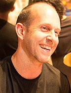
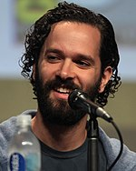

  Os trabalhos preliminares de The Last of Us,sob o codinome "Project Thing" ou "T1",começaram após o lançamento de Uncharted 2: Among Thieves em outubro de 2009. Pela primeira vez a companhia Naughty Dog foi dividida em duas equipes com o objetivo de trabalharem em dois projetos simultaneamente; enquanto uma desenvolvia Uncharted 3: Drake's Deception, a outra iniciou os trabalhos em The Last of Us. Os co-presidentes Evan Wells e Christophe Balestra escolheram o diretor de jogo Bruce Straley e o diretor de criação Neil Druckmann para liderarem o desenvolvimento de The Last of Us a fim dos dois projetos ocorrerem da melhor forma possível. Straley trabalhava na Naughy Dog desde março de 1999 e foi selecionado para comandar o projeto baseado em sua experiência e trabalhos em jogos anteriores, enquanto Druckmann era empregado desde 2004 e foi escolhido por sua determinação e talento para desenho.
Druckmann:Neil Druckmann (5 de dezembro de 1978) é um diretor de criação, roteirista e programador de jogos eletrônicos israeli-americano. Ele viveu em Israel até os dez anos de idade, onde suas experiências com entretenimento posteriormente influenciaram suas técnicas de narrativa. Ele mudou-se para os Estados Unidos em 1989 e estudou ciência da computação na Universidade Carnegie Mellon, formando-se e procurando um trabalho na indústria dos jogos eletrônicos.
Druckmann entrou na Naughty Dog inicialmente como um estagiário. Ele tornou-se programador em 2004, trabalhando em Jak 3 e Jak X: Combat Racing, em seguida atuando como projetista de jogo para Uncharted: Drake's Fortune e Uncharted 2: Among Thieves. Druckmann foi depois disso escolhido para trabalhar como diretor de criação e roteirista de The Last of Us, mantendo os cargos em Uncharted 4: A Thief's End e The Last of Us Part II. Além de seus trabalhos em jogos, ele também participou da produção dos quadrinhos Uncharted: Eye of Indra, A Second Chance at Sarah e The Last of Us: American Dreams.
Druckmann já foi muito elogiado por trabalho como roteirista de The Last of Us, recebendo indicações e vários prêmios por suas contribuições, incluindo um Prêmio DICE, dois Prêmios de Jogos da Academia Britânica e dois Prêmios do Sindicato dos Roteiristas. Seu trabalho em A Thief's End também foi bem recedido, com ele vencendo um prêmio do The Game Awards.
Bruce Straley é um director americano de jogos electrónicos empregado pela empresa de video-jogos Naughty Dog, para a qual começou a trabalhar em 1999. Ganhou notoriedade após realizar o aclamado jogo The Last of Us, lançado a 14 de Junho de 2013 para a Playstation 3. Realizou também, em parceria com Neil Druckmann, Uncharted 4: A Thief's End